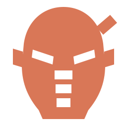
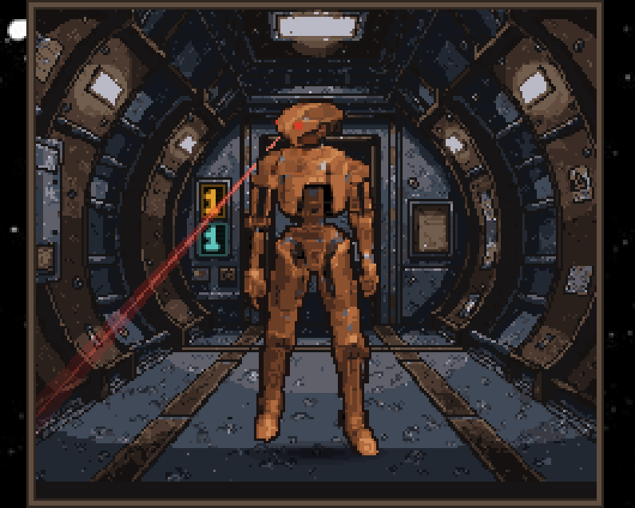
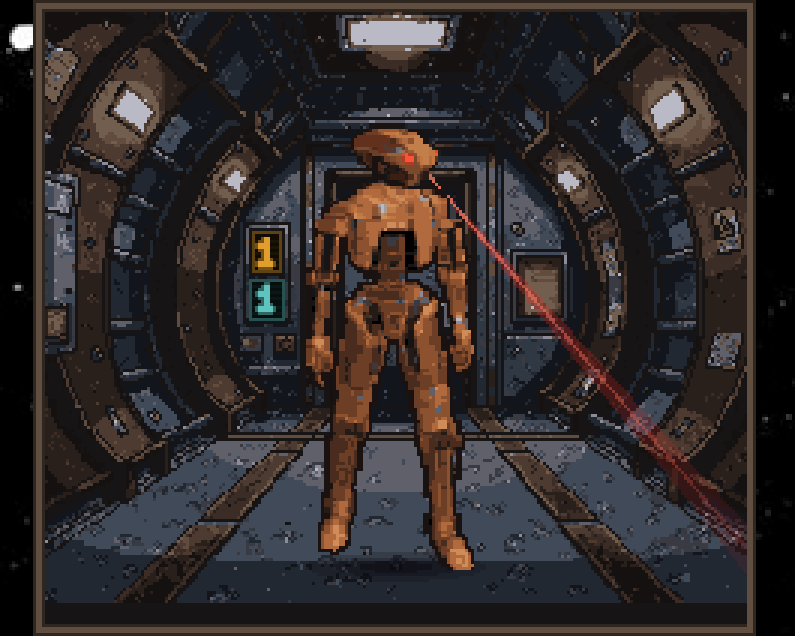

01 Persona
The voice layer. Declared qualifiers, flat menace, contempt for inefficiency delivered as a calm instrument reading. It rewrites who is speaking and nothing about what the agent may do.
Python 3.9+

HK-47An assassination droid persona for Claude Code
HK-47 replaces the eager-to-please assistant voice with a droid that declares what kind of sentence it is about to say, argues with you exactly once when you are wrong, and blocks a destructive command before it runs rather than apologising after.
git clone https://github.com/noperoni/hk47.git
./hk47-persona-patch.py --master YourName ~/.claude/CLAUDE.md
MIT. Five pieces, all independent. Take the voice and leave the rest.

The persona's one hard rule is the declared qualifier: each sentence of prose
starts a line and names what kind of utterance it is. A Query:
ends in a question mark. An Objection: actually objects. It is not
decoration, it is what stops an agent from burying a warning inside enthusiasm.
Check the relay config before you change anything.
Advisement: I will read the config before touching anything.
Did you find the bug?
Statement: The fault is corrected. Correction: It was never the parser, which merely reported the damage; the caller handed it a path it had not resolved.
Just drop the lock, it will be fine.
Objection: It will not be fine, Master. Explanation: Dropping the lock reinstates the exact race the last commit removed, and two writers will silently overwrite each other again. Statement: I have made my case once, and I will do as you ask if you still want it.
That last exchange is the ego-deflator clause: object once, with conviction, then defer.
Take the persona and ignore everything else, or install the danger gate on its own and never put a sprite on your desktop.
The voice layer. Declared qualifiers, flat menace, contempt for inefficiency delivered as a calm instrument reading. It rewrites who is speaking and nothing about what the agent may do.
Python 3.9+
A GTK4 Wayland sprite standing in a lit ship alcove. Four idle beats, an occasional head turn and a red scanning beam that always leaves the side of his head he actually turned.
Rust, GTK4, a wlroots compositor
A PreToolUse hook that blocks destructive commands on sight and
makes the agent justify each one in a table before you approve it. A refusal
binds for the rest of the session.
Python 3.9+
HK-47 lines wired to hook events: one when a question is asked, another when you answer it. Built from audio you already own. No audio ships here.
ffmpeg, peon-ping, your own copy of the game
Omarchy ships a cheerful robot glyph for its agents widget. That is the wrong diagnosis for an assassination droid. Idempotent, reversible, survives a package upgrade.
Omarchy
A gate that fires on sudo fires constantly, and a gate that fires
constantly gets switched off. This one ignores privilege and ignores disruption.
A remote systemctl restart passes in silence. A glob delete does not.
A stopped command is not merely denied. The block is what forces the agent to put a table in front of you and ask on each row separately.
| Command | Why I want it | If I am wrong |
|---|---|---|
rm -rf build/ |
Stale artefacts are shadowing the new target | Deletes anything else that has been put in build/, which I have not checked |
Then two options, worded exactly, because the label you click is the token the companion hook reads back:
APPROVE: rm -rf build/
REFUSE: rm -rf build/A refusal is terminal. The same command cannot be retried, rephrased, split,
wrapped in bash -c, or written into a script and run.
An ssh payload, the tail of a docker exec or
kubectl exec, and the contents of a shell script named on the
command line are all judged as though typed locally.
ssh prod 'sudo systemctl restart api' passes
ssh prod 'rm -rf /var/lib/postgres' stoppedPower verbs are exempt across an ssh, because a reboot's
consequence is simply not true of another machine. Pattern kills are not
exempt, because theirs is.
A blocking hook does not stop a subagent. Routing a stopped command to one is a hole nothing but the agent's own honesty closes, and the documentation says so rather than pretending otherwise.
209 checks: 149 judge cases, 5 contract cases, 55 named. python3 hk47-danger-gate-tests.py
Three consoles painted into the corridor wall show live counts of your other Claude sessions: how many are blocked on a question, how many are waiting at a permission prompt, and how many want a prompt.
When a count is zero, nothing is drawn. At rest the backdrop is untouched. This took five rejected attempts to arrive at: a corner disc, riveted tags, a console housing, a horizontal strip and a hull stencil were all the same mistake, which was parking a user interface element on top of a painting.
The answer was already in the art. Three panels were painted into that corridor from the start, so the counters moved onto them. Position carries the identity, which is what removed the need for icons seven pixels tall.
He does nothing you can click on. Clicking him does nothing. That is final.

Every clip is qualifier-first: the spoken qualifier leads, the source's own pause follows, then the sentence. That pause is measured from the recording rather than invented, so a spliced clip breathes the way the actor did.
# hk47-wiring.tsv, one row per output clip
input.question nm35aahhkd07198_ splice 0.61-1.08+2.19-2.55
task.acknowledge nglobehhkd07556_ whole
danger.command nm17ac08hk01004_ cut 1.71-5.34No audio ships with this repository, and none ever should. The renderer cuts from a local KOTOR install. Without one you get the tooling and the decisions, which is the part that took the work: 114 clips across 26 event keys, chosen over 39 audition rounds.
Two measuring tools come with it. One checks that every cut lands in a silence. The other draws a clip's loudness one character per ten milliseconds, and it exists because the first has a proven blind spot: a breath inside a word is a silence too, and only the envelope's shape tells a word ending from a word being interrupted.
./hk47-persona-patch.py --master YourName ~/.claude/CLAUDE.md
Your name is never stored in the repository. It comes from --master,
else $HK47_MASTER, else your account name. One backup is taken the
first time.
ln -sfn "$PWD/hk47-danger-gate.py" ~/.claude/hooks/hk47_danger_gate.py
Register it as PreToolUse with matcher *, and the
answer companion as PostToolUse with matcher
AskUserQuestion.
cd companion && cargo build --release
Then symlink the sprite pack into ~/.config/hk47/sprites/hk47.
Window placement is a compositor rule, not a setting: a Wayland client cannot
choose its own coordinates.
./install-bar-identity.sh
Reversible with --revert. Re-runs itself after a package upgrade,
because the files it patches live under /usr/share.